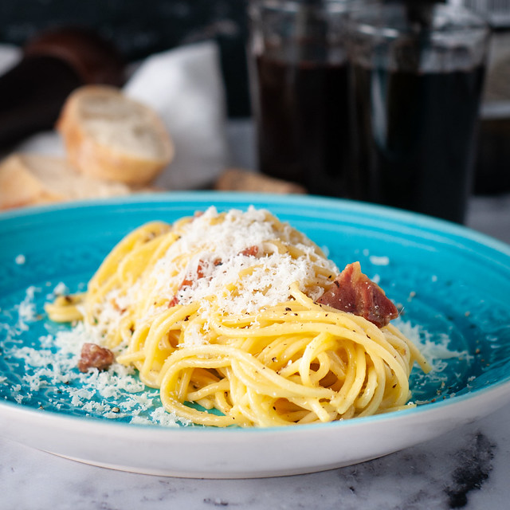

Spaghetti Carbonara

Description
Spaghetti carbonara is a traditional Italian pasta dish with a creamy, cheesy sauce topped with pancetta and pepper. It's also one of my favourite dishes - it's a birthday tradition to make some each year.
This is a simple recipe (from BBC GoodFood) to make your own traditional carbonara that still tastes delicious!
Ingredients
- 100g pancetta
- 50g pecorino cheese
- 50g parmesan
- 3 large eggs
- 350g spaghetti
- 2 garlic cloves
- 250g unsalted butter
- sea salt
- ground pepper
Steps
- Put a large saucepan of water to boil.
- Finely chop the pancetta, then grate the parmesan and pecorino, mixing them together.
- Beat the eggs in a bowl and season with sea salt and pepper.
- Add a pinch of salt to the water, then add the spaghetti and cook, covered, for 10 minutes.
- Squash the garlic cloves with the back of a knife.
- While the spaghetti is cooking, fry the pancetta with garlic.
- Leave to cook on medium heat for 5 minutes, until golden. Discard the garlic.
- Tip the pasta into the pan with the pancetta.
- Mix the cheese with the egg.
- Take the spaghetti and pancetta pan off the heat and quickly pour in the eggs and cheese, mixing using tongs. Now ready to serve!